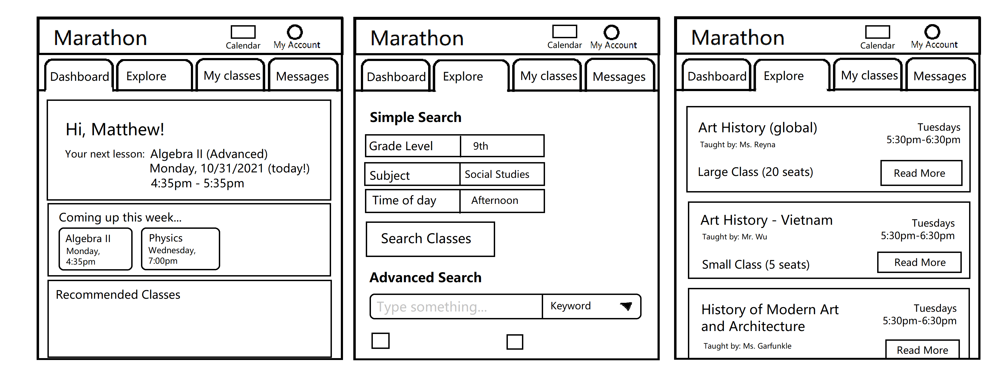
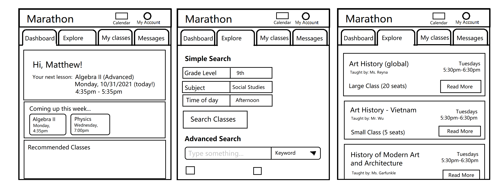
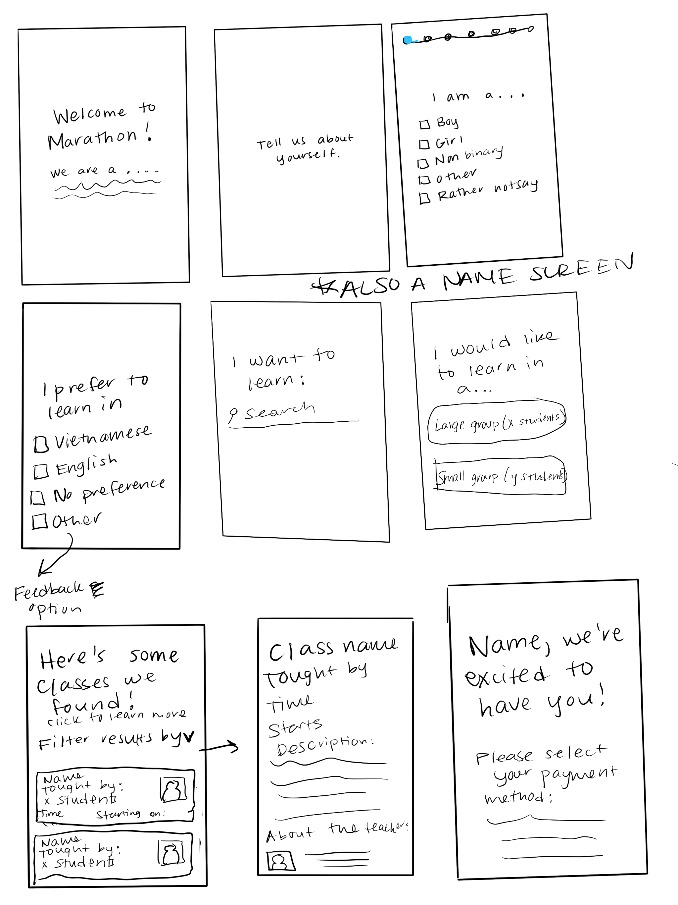
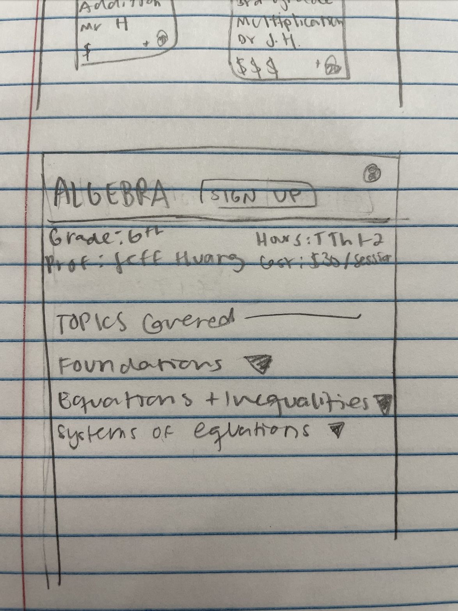
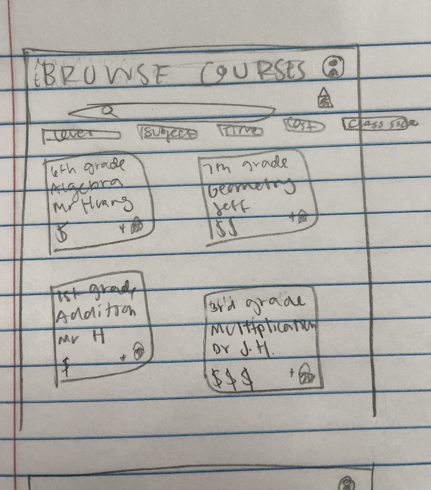

Part 1: Sketching and Wireframing
Pre-Design Thinking:
We chose to re-design a mobile interface for Marathon Education.
Marathon Education provides live after-school tutoring and classes to K-12 students in Vietnam. As such, when designing our prototype, we kept in mind the need to accommodate a wide range of ages and languages.
Sketching:
Each group member then brainstormed a different potential design for Marathon's app.
| Member One |

|
|---|---|
| Member Two |
 

|
| Member Three |


|
| Member Four |



|
Combining Ideas into a Wireframe

Part 2: Mockups
Interactive High Fidelity Mockup

Note: This mockup includes the edits made after the critique feedback mentioned below.
Mockup Studio Critique Feedback
During our studio critique session, we received feedback that helped us better develop our mockup. Here are a few critiques that were especially helpful:
- Include description of company on first sign up page
- Make the recommended courses more relevant/informed by the user sign up
- Include a username/password section of the sign up
- Simplify the home page (we previously had 2 "coming up classes" sections on the home page, as visible on wireframes)
- Edit the live "slow down" and "speed up" options, to make more clear if classes are recorded or live
- Search results should be clickable in their entirety
Comparison of Versions Before and After Studio Critique
Part 3: User Testing
Testing Instructions, Tasks, and Post-Task Questions
Our testers' instructions were:
Imagine you’re a 6th grade student, seeking help in your Algebra studies. Sign up for Marathon Education and register for the 6th grade Algebra class. Once you’ve registered for this class, join the live session. Please think aloud as you are performing the tasks.
You will be interacting with an interactive mockup, not an actual website. Not all buttons will work, but imagine that they would be functional in the final prototype. If at any point you are unsure of how to continue, press anywhere on the screen to see the available next steps highlighted in blue.
Our testers' tasks were:
- Follow the first few pages to sign up for Marathon Education. You will know that you have completed this task successfully when you have reached the home page.
- Register for the 6th grade Algebra class. You will know that you have completed this task successfully when the 6th grade Algebra class appears in the ‘My Classes’ tab.
- Join the live session of the 6th grade Algebra class. You will know that you have completed this task successfully when you see a screen with math equations and student questions.
Our testers' post-task questions were:
User Testing Videos
User 1
User 2
User 3
Analysis of Testing Results
All users who participated in our usertesting study were able to complete all tasks successfully without getting lost, managing to sign up for the app, register for a course, and join a live session. All users seemed to clearly understand the structure and flow of the app. These results were in line with our expectations, and we didn’t encounter any major surprises or problems with our testing. Users generally made small errors, such as navigating to the ‘wrong’ tab (i.e. going to the ‘My Classes’ tab before any classes were registered), and all of our users attempted to find their class in the ‘recommended’ section before going to the ‘explore’ tab and manually searching for their goal. One of the users was unsure if the app was designed for live sessions or pre-recorded lectures.
The most critical piece of feedback we received was on our visual style; specifically, one user felt the visual design used outdated features (e.g. the tabs) and outdated styles (e.g. the dark blue color and font). Based on this response, we would potentially switch the top tabs with a more modern bottom menu (like on Snackpass or Instagram) and experiment with different color and font options. To do so we would conduct an analysis of design attributes and decisions found in the interfaces of similar successful services and implement these attributes into our own design.